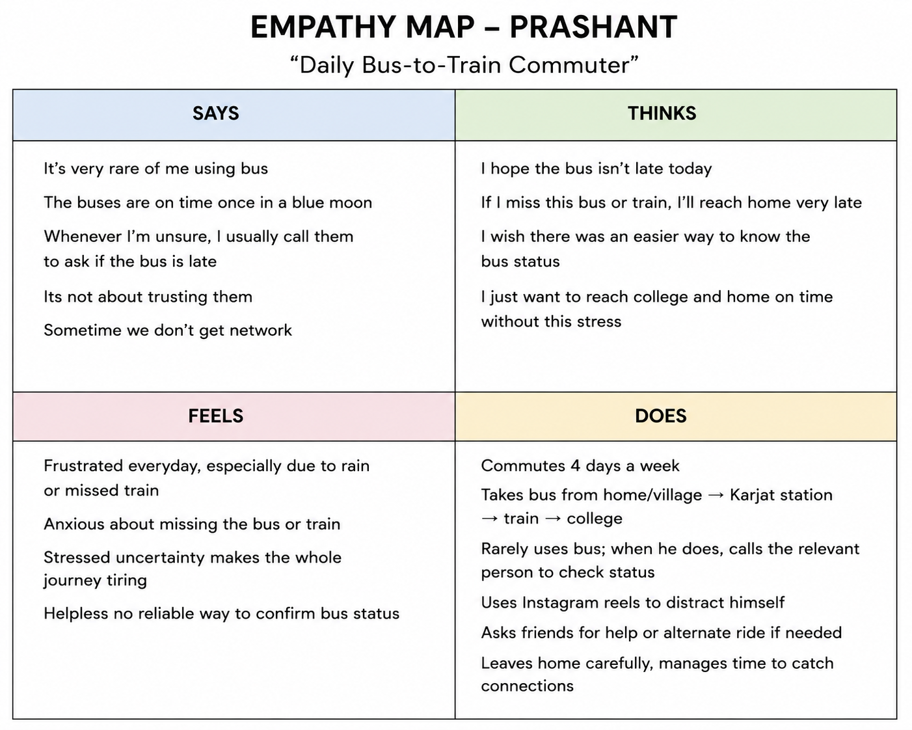
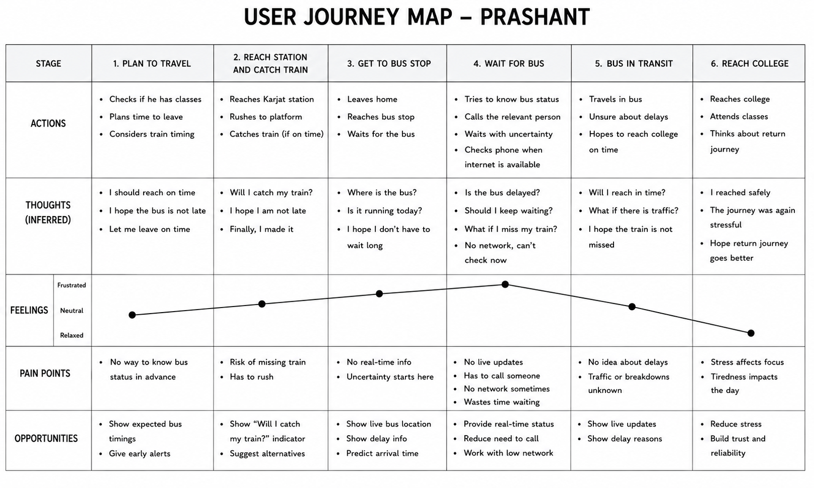

Broken Experience
A college student's daily commute becomes stressful when they cannot reliably understand what is happening with their bus/shuttle journey, especially when delays may affect their connecting train.
HCI Mid‑Term Case Study
"Predicting the Unpredictable Commute" — a research-led information architecture project built around Prashant, a day-scholar student whose commute depends on a bus-to-train connection he can never quite verify.
One commuter. One recurring decision he can't make with confidence: should I keep waiting?
This is the exact moment the research is about — not a hypothetical screen.
01 Project Overview
A college student's daily commute becomes stressful when they cannot reliably understand what is happening with their bus/shuttle journey, especially when delays may affect their connecting train.
The user depends on public transport to reach college. During the journey, uncertainty about the current bus status, delays, arrival time, and their possible impact on the connecting train can force the user to make last-minute decisions.
This HCI project aims to understand the user's actual commute experience, identify the core pain point, and use research to develop and validate an appropriate information structure and prioritized solution.
The problem is not simply the absence of a transport app. The underlying experience problem is uncertainty during the commute and difficulty knowing what to do when the journey is disrupted.
02 User Research
Qualitative interviews were conducted with 4 real day-scholar commuters to understand their actual commuting behaviour, frustrations, coping strategies, and experiences with delays. The interviews focused on real past experiences rather than asking participants to validate a proposed solution. Source · raw interview responses
| Participant | Commute | Key observation |
|---|---|---|
| Prashant | Scooty / bus / train (MSRTC) | Rarely relies on the bus, but when he does, has no way to confirm its status — calls the relevant person to ask whether the bus is delayed. Has previously missed his connecting train during rain. |
| Yuvraj | Bike, switching to car in monsoon | Leaves home 15–20 minutes early as a buffer; bad-road overtaking on a one-way road is a recurring source of delay and frustration. |
| Ganesh | Bike, long village-road commute | Frequently arrives late because of difficult village and highway road conditions; compensates by driving faster on the better stretches. |
| Aryan | Long-distance bike commute | Arrived 30 minutes late to an exam during heavy rain; now leaves a full hour early on exam days. |
Commuters cannot reliably predict journey time. Participants used personal buffers, transport changes, or other workarounds to compensate for that uncertainty.
Delays create last-minute decisions. Rain, road conditions, and transport delays make the expected journey time unreliable in the moment, not just on average.
Users rely on manual workarounds — leaving earlier, changing transport mode, checking information by phone call, or simply accepting extra waiting time — instead of trustworthy journey information.
The consequences can be serious. One participant reported arriving 30 minutes late to an exam after underestimating a rainy-day commute.
"Started going 1 hour earlier on exam day."
— Aryan Interview · bike commuterThis behaviour shows a user creating a large personal time buffer because he cannot reliably predict the commute — even though his delay source is road conditions, not a bus.
The interviews revealed two different flavours of commute uncertainty: physical, road-condition delays for the bike and car commuters (Yuvraj, Ganesh, Aryan), which no information product can fix, and information-gap delays for the one bus/train commuter (Prashant), where the real problem is that he has no way to check status and must call someone to find out.
This project scopes specifically to the second problem, because it is the one an information architecture can actually address. Every persona, pain point, and feature from this point forward is built from Prashant's validated experience, not an average of all four participants.
The recurring issue across the research is not transportation itself — it is uncertainty about how long the journey will actually take, and what to do when conditions change. These findings were used to build the research-backed User Persona and identify the core pain point.
03 User Persona
Prashant commutes between his home, the railway station, and college. His full journey takes around 2 hours altogether. He depends on public transport (MSRTC bus) for part of the route, and occasionally needs to call someone to find out whether the bus is delayed.
Reach college or home on time — without unnecessary waiting, rushing, or missing his connecting transport.
Frustrated when the journey is delayed. Worried about missing his train. Stressed about reaching home late.
Assumption vs. finding
Before research, the working Proto-Persona guessed a commute of "45 minutes, sometimes up to 1.5 hours." The actual interview response was explicit: "it takes 2 hours altogether." The guess wasn't just imprecise — it understated the full journey by more than an hour. The persona above uses the validated figure, not the original guess.
04 Empathy Map

Key empathy insight: Prashant's behaviour shows that uncertainty is not just an information problem. When he doesn't know whether the bus is delayed, he has to contact others, wait, or arrange an alternative — and that is what increases the frustration and worry about his connecting transport.
05 User Journey Map
Because Prashant rarely relies on the bus, this maps the specific, high-stakes scenario when he does — the moment a bus delay puts his train connection at risk — rather than an everyday routine he's already built coping habits around.

| Stage | Actions | Thought inferred | Emotion |
|---|---|---|---|
| 1. Plan to travel | Checks if he has classes; plans time to leave; considers train timing. | "I should reach on time." / "I hope the bus is not late." / "Let me leave on time." | Calm |
| 2. Reach station and catch train | Reaches Karjat station; rushes to platform; catches train (if on time). | "Will I catch my train?" / "I hope I am not late." / "Finally, I made it." | Slightly anxious |
| 3. Get to bus stop | Leaves home; reaches bus stop; waits for the bus. | "Where is the bus?" / "Is it running today?" / "I hope I don't have to wait long." | Uncertain |
| 4. Wait for bus | Tries to know bus status; calls the relevant person; waits with uncertainty; checks phone when internet is available. | "Is the bus delayed?" / "Should I keep waiting?" / "What if I miss my train?" / "No network, can't check now." | Highly stressed |
| 5. Bus in transit | Travels in bus; unsure about delays; hopes to reach college on time. | "Will I reach in time?" / "What if there is traffic?" / "I hope the train is not missed." | Still worried |
| 6. Reach college | Reaches college; attends classes; thinks about the return journey. | "I reached safely." / "The journey was again stressful." / "Hope return journey goes better." | Relieved |
Lowest point: the moment a bus delay creates uncertainty about the connecting train. Prashant doesn't know whether to keep waiting, call someone, ask a friend for help, or start worrying about missing his connection.
Journey insight: the deeper problem isn't "the bus is late." It's that Prashant has no reliable information about the current situation, so he can't confidently decide what to do next — which is what connects this map directly to the Core Pain Point.
06 Core Pain Point
Prashant experiences unpredictable travel time and bus delays. When unsure, he has to call the operator or ask a friend for help.
The lowest point occurs when a bus delay creates uncertainty about whether Prashant will miss his connecting train.
Prashant cannot reliably know the current bus situation or how a delay will affect his journey, forcing him to depend on others and make last-minute travel decisions.
The problem is not simply that the bus is sometimes delayed. The deeper issue is the lack of reliable information during the journey — made worse because, for Prashant, the bus/train leg is infrequent and unfamiliar, so he hasn't built routine coping habits for it the way he has for his more regular travel. That combination of rarity and high stakes (missing a train, not just a bus) is what causes:
This pain point is the basis for the User Stories and later feature ideation.
07 User Stories
These stories are derived specifically from Prashant's validated experience — the one participant whose commute depends on the bus/train connection this project addresses, not an average across all four interviewees.
As a student commuting to college,
I want to know the current status of my bus,
so that I can decide whether to keep waiting or make another travel decision.
As a student who depends on a connecting train,
I want to understand whether a bus delay will affect my train connection,
so that I can decide what to do before I miss my train.
As a student travelling by public transport,
I want to receive timely information when my journey is disrupted,
so that I can respond without depending on calls or other people for information.
08 Feature Inventory
Generated from the identified user needs and User Stories above. These are candidates, not final features — they're evaluated through Card Sort → Information Architecture → Tree Test → IA Pivot → MoSCoW → DFV before anything is confirmed for the MVP.
09 Card Sorting
Participants sorted the 20 candidate features using five starting categories: Journey Information, Alerts & Updates, Planning & Connections, Help & Support, and Other / New Category.
| Delay Notifications | 11/14 |
| Schedule Change Alerts | 11/14 |
| Rain / Weather Disruption Alert | 11/14 |
| Bus Arrival Alerts | 10/14 |
| Delay Information | 9/14 |
Users strongly associated disruption-related information with Alerts & Updates.
| Contact / Help | 11/14 |
| Frequently Asked Questions | 9/14 |
| Feedback / Report an Issue | 9/14 |
A relatively consistent mental model for Help & Support.
| Journey Planner | 9/14 |
| Trip Planning | 8/14 |
Journey Planner and Trip Planning form a recognisable planning group.
| Current Bus Status | 8/14 |
| Expected Arrival Time | 7/14 |
| Feature | Journey Info | Alerts | Planning |
|---|---|---|---|
| Next Bus Information | 6/14 | 6/14 | — |
| Estimated Travel Time | 6/14 | 6/14 | — |
| Bus Route | 5/14 | 4/14 | 5/14 |
These split responses show that some information didn't have a single clear mental-model category.
Mental-model summary
10 Information Architecture
Ambiguous features were placed in the category with the most reasonable relationship to their content — a first draft, not a final decision. The Tree Test validates whether users can actually find these features within this structure.
V1 Information Architecture
11 Tree Test
| Task / Feature | Correct | Result |
|---|---|---|
| Expected Arrival Time | 4/5 | Mostly successful |
| Schedule Change Alerts | 4/5 | Mostly successful |
| Bus Stops | 3/5 | Mixed |
| Journey Planner | 2/5 | Failure |
| Report an Issue | 2/5 | Failure |
| Current Bus Status | 0/5 | Major failure |
Key insight: some V1 categories were understandable, but Current Bus Status created the strongest confusion of anything tested. That failure is the direct evidence behind the IA pivot below — not a personal preference.
12 IA Pivot
V1: Journey Information → Current Bus Status
Tree Test: 0/5 correct
Problem: Users did not clearly associate current bus status with the Journey Information category.
Change: Move Current Bus Status into a new Live Journey category.
V1: Journey Information mixed live/current information with static route information.
Problem: Ambiguity between the current journey and the route itself.
Change: Split into Live Journey and Routes & Stops.
V2 Information Architecture
Pivot rationale
13 MoSCoW Prioritization
How DFV changed this
Current Bus Status and Journey Planner were the two most debated Must-Have candidates (see DFV, next section). Journey Planner lost that evaluation, so it moved down to Should Have. That opened a fourth Must-Have slot, filled by "Will I Catch My Train?" Indicator — the feature that most directly answers User Story 2 and sits at the exact lowest point of the Journey Map (the connecting-train risk), rather than a general planning tool.
| Current Bus Status | Directly addresses the core need to know what is happening with the current journey. |
| Expected Arrival Time | Helps the user understand when the bus is expected to arrive. |
| Delay Information | Directly addresses the disruption and uncertainty identified in the research. |
| "Will I Catch My Train?" Indicator | Answers the exact question at the Journey Map's lowest point and directly fulfils User Story 2. |
| Journey Planner | Useful for planning, but less directly tied to the immediate disruption problem — moved down after losing the DFV comparison. |
| Next Bus Information | Helps when the current bus is delayed or missed. |
| Estimated Travel Time | Helps users understand expected journey duration. |
| Delay Notifications | Provides timely information about disruptions. |
| Train Timing Information | Supports users who depend on connecting trains. |
| Alternative Travel Information | Helps users respond when the normal journey is disrupted. |
| Bus Route | Useful reference information but not central to the core pain point. |
| Bus Stops | Helpful for navigation but not essential to solving the main problem. |
| Bus Arrival Alerts | Adds convenience but is not essential for the MVP. |
| Schedule Change Alerts | Useful for future changes but less central to the immediate problem. |
| Rain / Weather Disruption Alert | Helpful during disruptions but not essential to the core experience. |
| Service Announcements | Not essential to solving the core commute problem in the MVP. |
| Trip Planning | Overlaps with Journey Planner and can be excluded from the current scope. |
| Frequently Asked Questions | Support content does not directly address the core commute pain point. |
| Contact / Help | Useful support functionality but not essential to the MVP. |
| Feedback / Report an Issue | Valuable for a later version but not essential to solving the immediate user problem. |
Final distribution: 4 Must + 6 Should + 5 Could + 5 Won't = 20 features. Prioritisation is anchored to the validated pain point — uncertainty during the commute and difficulty understanding how disruption affects the journey. "Won't Have" does not mean useless; it means excluded from the current MVP scope.
14 DFV Analysis
After MoSCoW, the two most debated Must-Have candidates were evaluated using Desirability, Feasibility, and Viability — each scored 1–5 by the project/design team.
| Feature | Desirability | Feasibility | Viability | Total |
|---|---|---|---|---|
| Current Bus Status | 5/5 | 4/5 | 5/5 | 14/15 |
| Journey Planner | 4/5 | 3/5 | 4/5 | 11/15 |
Desirability 5/5 — directly addresses the core user need to understand the current commute situation.
Feasibility 4/5 — technically achievable, but depends on reliable real-time transport data.
Viability 5/5 — directly supports the main purpose of reducing uncertainty during the commute.
Desirability 4/5 — useful for planning, but less directly connected to the immediate disruption problem.
Feasibility 3/5 — more complex, since it may require route, timing, and connecting-transport information.
Viability 4/5 — useful, but overlaps with existing journey-planning services.
Result: Current Bus Status wins, 14/15 to 11/15 — the stronger overall score and the more direct connection to the core pain point. Because Journey Planner scored lower on both Feasibility and Viability, it moved from Must Have to Should Have in the MoSCoW prioritisation above. That is the mechanism by which this DFV result actually changed the final feature set, rather than sitting alongside it as a separate exercise.
These DFV scores are project/design-team evaluations based on the research, user needs, and practical product considerations — not participant survey scores, and they are not presented as user-reported ratings.
15 Final MVP
Research → Pain Point → User Stories → Feature Ideation → Card Sort → V1 IA → Tree Test → IA Pivot → MoSCoW → DFV all point to the same feature.
Selected priority
DFV score: 14 / 15
MVP principle: the MVP should prioritise solving the validated user problem rather than including every candidate feature. This direction prioritises reliable current-journey information, with the remaining features already scoped through MoSCoW and DFV above.
Conceptual illustration only — not a usability result.